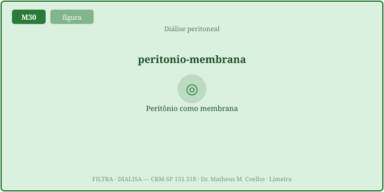
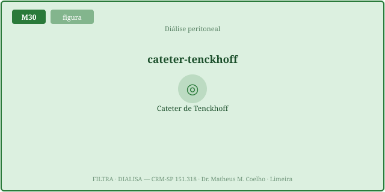
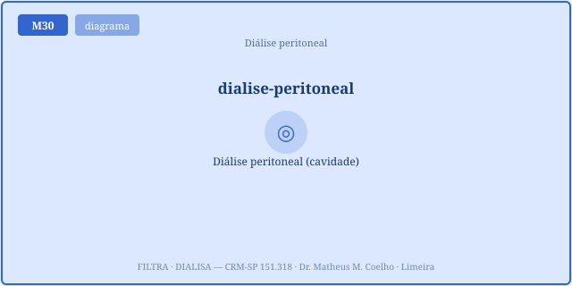
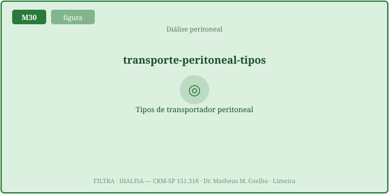
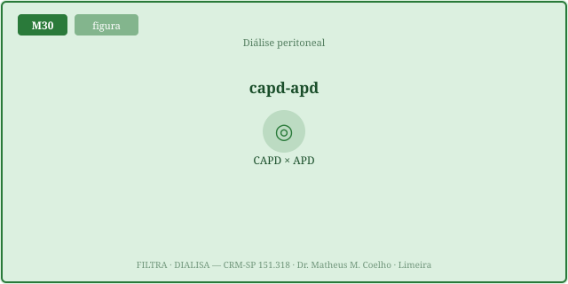
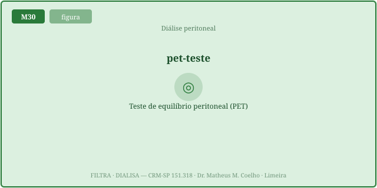
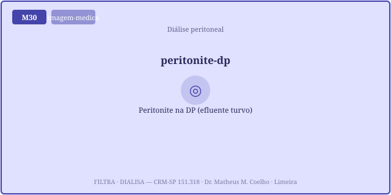

A DP usa o próprio corpo como dialisador. As Fig. 1–8 voltam no Caso, na Trilha e na Avaliação. A relação central: UF osmótica = LUF·(gradiente de glicose) − reabsorção; como o gradiente decai ao longo do dwell, a UF cresce, atinge um pico e depois cai. Defender o meio interno (volume e escórias) com uma membrana que se desgasta a cada hora é o desafio da homeostasia na DP.
O dialisato entra pelo cateter e fica no abdome (o dwell). O soluto difunde do sangue, pelo capilar peritoneal, para o líquido; a água segue a osmose da glicose. A membrana é o próprio peritônio.


A glicose hipertônica (1.5 / 2.5 / 4.25% de dextrose) cria o gradiente osmótico que puxa água do capilar para o dialisato. Mais dextrose → mais gradiente → mais UF. A reabsorção linfática puxa de volta o tempo todo.


Durante o dwell a glicose difunde para o sangue: o gradiente decai exponencialmente. A UF sobe, atinge um pico e, num dwell longo, reverte — a reabsorção linfática vence e o paciente reabsorve líquido. Por isso há um tempo ótimo de dwell.


O PET (teste de equilíbrio peritoneal) mede o D/P de creatinina às 4 h. Alto transportador: equilibra o soluto rápido (bom clearance) MAS absorve a glicose cedo (UF ruim) — o paradoxo. Baixo: mantém a UF, clearance lento. A icodextrina (polímero não absorvido) sustenta a UF no dwell longo.


Homem de 58 anos em DP automatizada (APD). Vinha bem, agora "está inchado" apesar da diálise. Vamos decompor a UF pelo mecanismo (volte às Fig. 5 e 7).
O próprio peritônio. O dialisato fica no abdome (dwell) e o soluto/água atravessam o peritônio pelo capilar peritoneal — sem dialisador externo.
O gradiente osmótico da glicose hipertônica do dialisato. A UF é OSMÓTICA — não é pressão transmembrana mecânica como na HD.
Mais glicose (1.5 → 2.5 → 4.25%) → maior gradiente osmótico → mais água puxada do capilar para o dialisato.
Ela é absorvida (difunde para o sangue). O gradiente decai exponencialmente → a UF desacelera.
Enquanto LUF·gradiente > reabsorção, a UF sobe; quando a glicose cai e o gradiente fica pequeno, a reabsorção linfática vence → a UF reverte (reabsorve líquido).
O D/P de creatinina às 4 h (razão dialisato/plasma). Classifica o tipo de transportador da membrana.
Uma membrana de transporte rápido: equilibra o soluto cedo (D/P alto, ~0,8–1,0) → bom clearance. Mas absorve a glicose cedo → UF ruim.
O "bom de difusão" é o "ruim de UF": a mesma permeabilidade que depura solutos esvazia o gradiente de glicose. Bom clearance e má ultrafiltração andam juntos.
Dwells curtos (pega a UF antes de a glicose sumir), maior dextrose nos ciclos, e icodextrina no dwell longo.
Membrana lenta: mantém a UF (gradiente dura) mas o clearance de soluto é lento → precisa de dwells mais longos para depurar.
É um polímero de glicose não absorvido por difusão → mantém o gradiente oncótico por 8–12 h, sustentando a UF sem o colapso da glicose.
CAPD é manual (dwells longos diurnos); APD usa cicladora noturna (dwells curtos). O esquema segue o tipo de transportador.
Substitui parcialmente o rim para defender o volume e depurar escórias — por uma membrana viva que se desgasta a cada hora de dwell. O número (UF drenada) só faz sentido lido pelo mecanismo osmótico.
Os controles do Lab alimentam esta curva. A linha ciano é o seu transportador; a tracejada vermelha é o alto transportador de referência (pico precoce, reverte cedo). O marcador laranja é o ponto de dwell atual; a linha do zero separa UF (acima) de reabsorção (abaixo).
| Variável | Atual | Comentário |
|---|---|---|
| UF líquida (mL) | — | drenado − infundido |
| Volume drenado (mL) | — | infundido + UF |
| Glicose absorvida (g) | — | some o gradiente |
| D/P creatinina (atual) | — | equilíbrio de soluto |
| D/P creatinina às 4 h (PET) | — | classifica |
| Clearance de soluto (L) | — | D/P × drenado |
| Tempo de pico de UF (h) | — | taxa = 0 |